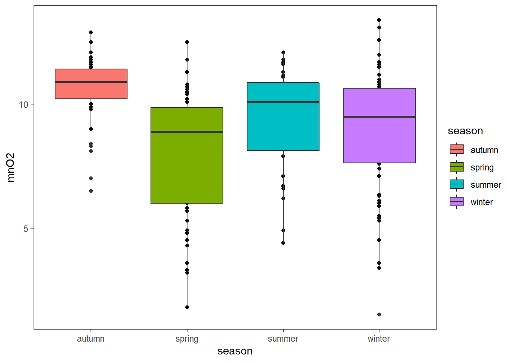
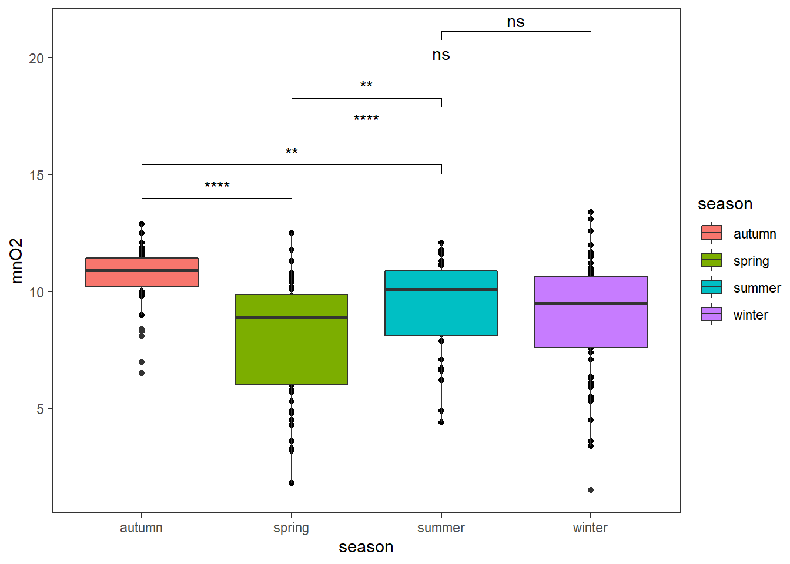
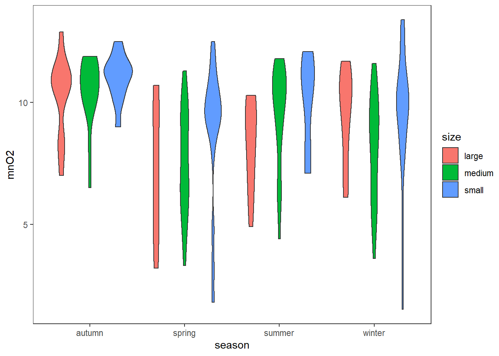
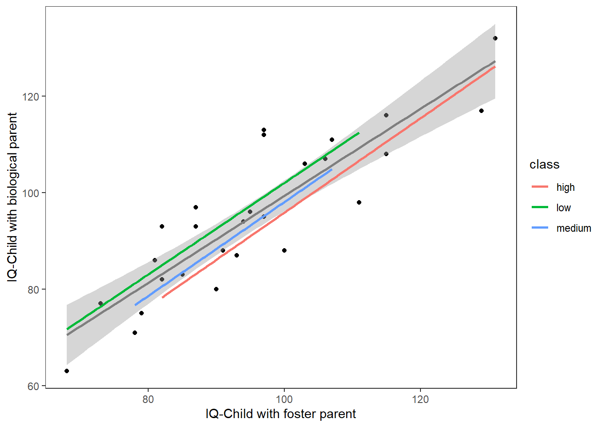
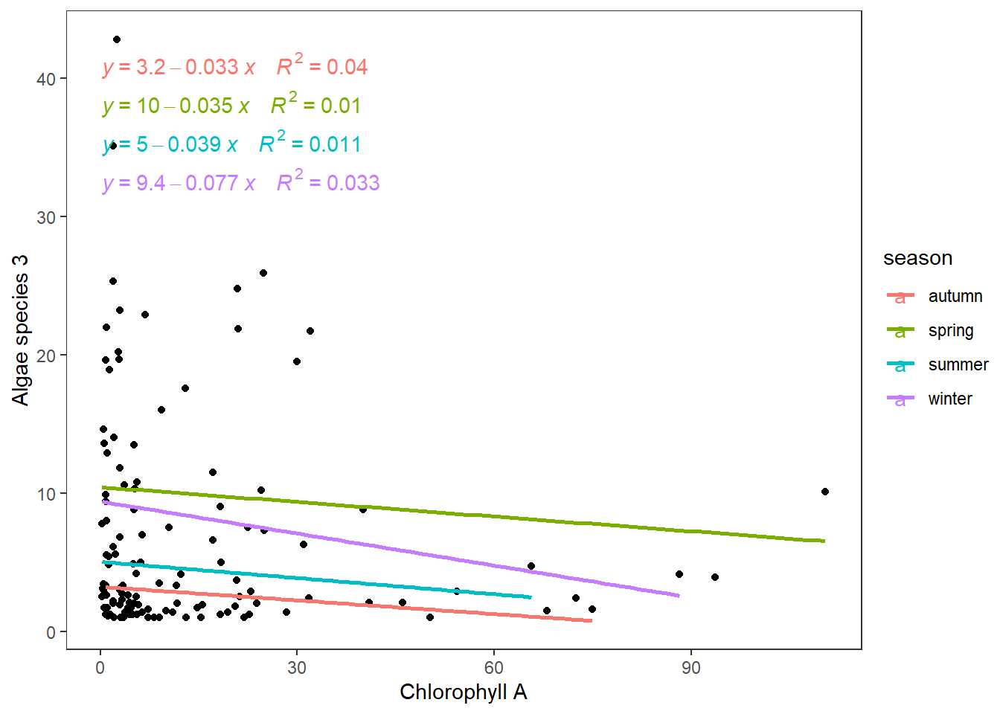
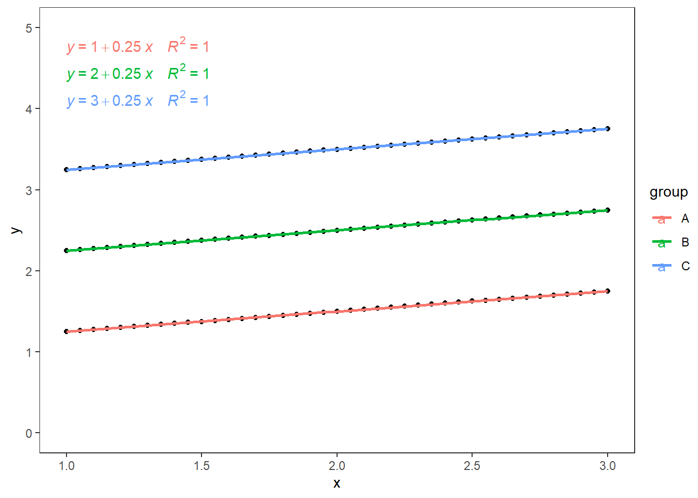

This week we will use the following packages as always, load them at the beginning of the session 👩 👨
library(tidyverse)
library(ggpubr)
library(DMwR) #dataset
#install.packages("package_name") #if you dont have one of themFactor or the indicator variables, and sets of indicator variables that convert categorical predictors into numerical ones for use in regression models or plots. In R, each factor element, levels, will take a real number from 1 to n number of factors in x, these numbers determined alphabetically by default.
data("algae")
head(as_tibble(algae))
## # A tibble: 6 x 18
## season size speed mxPH mnO2 Cl NO3 NH4 oPO4 PO4 Chla a1 a2
## <fct> <fct> <fct> <dbl> <dbl> <dbl> <dbl> <dbl> <dbl> <dbl> <dbl> <dbl> <dbl>
## 1 winter small medi~ 8 9.8 60.8 6.24 578 105 170 50 0 0
## 2 spring small medi~ 8.35 8 57.8 1.29 370 429. 559. 1.3 1.4 7.6
## 3 autumn small medi~ 8.1 11.4 40.0 5.33 347. 126. 187. 15.6 3.3 53.6
## 4 spring small medi~ 8.07 4.8 77.4 2.30 98.2 61.2 139. 1.4 3.1 41
## 5 autumn small medi~ 8.06 9 55.4 10.4 234. 58.2 97.6 10.5 9.2 2.9
## 6 winter small high 8.25 13.1 65.8 9.25 430 18.2 56.7 28.4 15.1 14.6
## # ... with 5 more variables: a3 <dbl>, a4 <dbl>, a5 <dbl>, a6 <dbl>, a7 <dbl>Let’s look at the structure of the dataset.
str(algae[,1:8])
## 'data.frame': 200 obs. of 8 variables:
## $ season: Factor w/ 4 levels "autumn","spring",..: 4 2 1 2 1 4 3 1 4 4 ...
## $ size : Factor w/ 3 levels "large","medium",..: 3 3 3 3 3 3 3 3 3 3 ...
## $ speed : Factor w/ 3 levels "high","low","medium": 3 3 3 3 3 1 1 1 3 1 ...
## $ mxPH : num 8 8.35 8.1 8.07 8.06 8.25 8.15 8.05 8.7 7.93 ...
## $ mnO2 : num 9.8 8 11.4 4.8 9 13.1 10.3 10.6 3.4 9.9 ...
## $ Cl : num 60.8 57.8 40 77.4 55.4 ...
## $ NO3 : num 6.24 1.29 5.33 2.3 10.42 ...
## $ NH4 : num 578 370 346.7 98.2 233.7 ...As you can see, we got 3 categorical variables: Season, Size and Speed with different levels. To look at all the levels then you can use levels(variable)
levels(algae$size)
## [1] "large" "medium" "small"Analysis of variance is another type of linear model here, we will test that there is no difference in the mean \(\bar{y}\) of all the independent variable levels \(j\) also expressed as \(H_{0}: \bar{y}_j=0\). The F-statistic will compare the \(H_{0}\) with the \(H_{1}\), alternative hypothesis at least one group with a mean function different from 0 \(H_{1}: \bar{y}_j\neq 0\). A larger value of F provides evidence against the \(H_{0}\) and in favour of the \(H_{1}\).
Let’s use the function aov to calculate our One-way ANOVA
fit_aov<-aov(mnO2~season,data=algae)
summary(fit_aov)
## Df Sum Sq Mean Sq F value Pr(>F)
## season 3 159.2 53.06 10.64 1.65e-06 ***
## Residuals 194 967.3 4.99
## ---
## Signif. codes: 0 '***' 0.001 '**' 0.01 '*' 0.05 '.' 0.1 ' ' 1
## 2 observations deleted due to missingnessOur F value is high resulting in a significant difference \(P<0.05\). We can conclude that there is a difference in Manganese dioxide over seasons in our study area. However, we want to know the impact of each season on the area. As said before, ANOVA is also a linear model so we will turn that ANOVA into a linear model with each season group being one factor.
summary.lm(fit_aov)
##
## Call:
## aov(formula = mnO2 ~ season, data = algae)
##
## Residuals:
## Min 1Q Median 3Q Max
## -7.3798 -1.2148 0.4995 1.4972 4.5202
##
## Coefficients:
## Estimate Std. Error t value Pr(>|t|)
## (Intercept) 10.6005 0.3531 30.025 < 2e-16 ***
## seasonspring -2.5909 0.4696 -5.517 1.09e-07 ***
## seasonsummer -1.1857 0.4878 -2.431 0.015980 *
## seasonwinter -1.7207 0.4528 -3.800 0.000194 ***
## ---
## Signif. codes: 0 '***' 0.001 '**' 0.01 '*' 0.05 '.' 0.1 ' ' 1
##
## Residual standard error: 2.233 on 194 degrees of freedom
## (2 observations deleted due to missingness)
## Multiple R-squared: 0.1413, Adjusted R-squared: 0.128
## F-statistic: 10.64 on 3 and 194 DF, p-value: 1.649e-06We can observe that the reference season in autumn and all seasons show a significant reduction. The biggest change is during spring with a reduction of 2.59 units in the mean value of Autom. This can be performed for all the levels with the help of Tukey’s range test
ANOVA will highlight any differences among the levels of the independent variable, but not which differences are significant. To establish each level as a treatment group and compare it with the rest in a post-hoc analysis, we will use TukeyHSD (Tukey’s Honestly-Significant Difference).
TukeyHSD(fit_aov)
## Tukey multiple comparisons of means
## 95% family-wise confidence level
##
## Fit: aov(formula = mnO2 ~ season, data = algae)
##
## $season
## diff lwr upr p adj
## spring-autumn -2.5908846 -3.8078479 -1.3739214 0.0000007
## summer-autumn -1.1857273 -2.4498770 0.0784225 0.0747333
## winter-autumn -1.7206613 -2.8941785 -0.5471441 0.0011041
## summer-spring 1.4051573 0.2198722 2.5904424 0.0128857
## winter-spring 0.8702233 -0.2178800 1.9583266 0.1658059
## winter-summer -0.5349340 -1.6755671 0.6056991 0.6178751This output shows the pairwise differences between the seasons ($season).
After running pairwise comparisons among each of the groups with a conservative error estimate we found the groups that are statistically different from one another.
Look at the plot to understand the results better and observe those differences in the mean.
ggplot(algae,aes(x=season,y=mnO2,fill=season))+
geom_point()+
geom_boxplot()+
theme_test()
We can directly get some comparisons which perform one-sample Wilcoxon tests on vectors of data with the help of the package ggpubr
ggplot(algae,aes(x=season,y=mnO2,fill=season))+
geom_point()+
geom_boxplot()+
ggpubr::stat_compare_means(comparisons =list(c(1,2),c(1,3),c(1,4),c(2,3),c(2,4),c(3,4)),
label = "p.signif")+
theme_test()
ANOVA type II follows the same ideas as our one-way ANOVA, testing the difference in the group means of our quantitative variable. Here, we will use two categorical independent variables. With the addition of this new variable we will test how each independent variable affects the dependent variable as well as the interaction effect among them. Note that no significant interaction is assumed so we can continue with the analysis for main effects.
ggplot(algae,aes(x=season,y=mnO2,fill=size))+
geom_violin()+
theme_test()
fit_aov<-aov(mnO2~season*size,data=algae)
summary(fit_aov)
## Df Sum Sq Mean Sq F value Pr(>F)
## season 3 159.2 53.06 11.086 9.94e-07 ***
## size 2 45.5 22.77 4.756 0.00967 **
## season:size 6 31.4 5.24 1.095 0.36703
## Residuals 186 890.3 4.79
## ---
## Signif. codes: 0 '***' 0.001 '**' 0.01 '*' 0.05 '.' 0.1 ' ' 1
## 2 observations deleted due to missingnessWe get that season as expected rejects the \(H_o\) and so does size but there is no difference for different seasons and groups so we should remove the interaction term.
fit_aov<-aov(mnO2~season+size,data=algae)
summary(fit_aov)
## Df Sum Sq Mean Sq F value Pr(>F)
## season 3 159.2 53.06 11.053 9.99e-07 ***
## size 2 45.5 22.77 4.742 0.00977 **
## Residuals 192 921.7 4.80
## ---
## Signif. codes: 0 '***' 0.001 '**' 0.01 '*' 0.05 '.' 0.1 ' ' 1
## 2 observations deleted due to missingnessPost-hoc testing will be the same with the Tukey’s Honestly-Significant-Difference (TukeyHSD) test, it lets us see which groups are different from one another
TukeyHSD(fit_aov)
## Tukey multiple comparisons of means
## 95% family-wise confidence level
##
## Fit: aov(formula = mnO2 ~ season + size, data = algae)
##
## $season
## diff lwr upr p adj
## spring-autumn -2.5908846 -3.7851403 -1.39662888 0.0000004
## summer-autumn -1.1857273 -2.4262891 0.05483451 0.0667579
## winter-autumn -1.7206613 -2.8722816 -0.56904093 0.0008454
## summer-spring 1.4051573 0.2419887 2.56832601 0.0107692
## winter-spring 0.8702233 -0.1975769 1.93802352 0.1529061
## winter-summer -0.5349340 -1.6542838 0.58441581 0.6031445
##
## $size
## diff lwr upr p adj
## medium-large 0.009204434 -0.94686616 0.965275 0.9997149
## small-large 1.009510198 0.01785058 2.001170 0.0449708
## small-medium 1.000305764 0.15944801 1.841164 0.0150440This output shows the pairwise differences between the seasons ($season) and between the three levels of algae size ($size).
Like ANOVA, “Analysis of Covariance” (ANCOVA) has a single continuous dependent variable. Unlike ANOVA, ANCOVA tests both a factor and a continuous independent variable (e.g. comparing carbon emission score by both ‘GDP’ and ‘continent’). The term for the continuous independent variable (IV) used in ANCOVA is named covariate. We will cover one-way ANCOVA and the classical model options.
ANCOVA makes several assumptions about the data, such as:
Shapiro-Wilk of the model residuals.Levene for the residuals and groupslibrary(carData)#data set
fit_ancova<-aov(IQbio~IQfoster*class,data = Burt)
summary(fit_ancova)
## Df Sum Sq Mean Sq F value Pr(>F)
## IQfoster 1 5231 5231 83.382 9.28e-09 ***
## class 2 175 88 1.396 0.270
## IQfoster:class 2 1 0 0.007 0.993
## Residuals 21 1317 63
## ---
## Signif. codes: 0 '***' 0.001 '**' 0.01 '*' 0.05 '.' 0.1 ' ' 1fit_ancova<-aov(IQbio~IQfoster+class,data = Burt)
summary(fit_ancova)
## Df Sum Sq Mean Sq F value Pr(>F)
## IQfoster 1 5231 5231 91.259 1.8e-09 ***
## class 2 175 88 1.528 0.238
## Residuals 23 1318 57
## ---
## Signif. codes: 0 '***' 0.001 '**' 0.01 '*' 0.05 '.' 0.1 ' ' 1summary.lm(fit_ancova) # same as summary(lm(IQbio~IQfoster+class,data = Burt))
...
## Coefficients:
## Estimate Std. Error t value Pr(>|t|)
## (Intercept) -0.6076 11.8551 -0.051 0.960
## IQfoster 0.9658 0.1069 9.031 5.05e-09 ***
## classlow 6.2264 3.9171 1.590 0.126
## classmedium 2.0353 4.5908 0.443 0.662
...The plot with no effect of the categorical variable.
ggplot(Burt,aes(IQfoster,IQbio))+
geom_point()+
geom_smooth(method = "lm",se = T,colour="grey50")+
geom_smooth(method = "lm",se=F,aes(colour=class))+
labs(x="IQ-Child with foster parent",y="IQ-Child with biological parent")+
theme_test()
Here, the levels of the categorical variable respond at different magnitudes with a change in the covariate. You may have the same intercept but, the key indicator is having different slopes and non-significant interaction.
We tested the interaction assumption, it meet so we removed it from the ANCOVA.
fit_ancova<-aov(a3~season+Chla,data = algae[algae$a3!=0,])
summary.lm(fit_ancova) #seasons significant
##
## Call:
## aov(formula = a3 ~ season + Chla, data = algae[algae$a3 != 0,
## ])
##
## Residuals:
## Min 1Q Median 3Q Max
## -9.457 -4.507 -1.691 2.228 32.304
##
## Coefficients:
## Estimate Std. Error t value Pr(>|t|)
## (Intercept) 3.44311 1.67395 2.057 0.041903 *
## seasonspring 7.17081 2.01234 3.563 0.000529 ***
## seasonsummer 1.67243 2.11639 0.790 0.430979
## seasonwinter 5.43295 2.02556 2.682 0.008363 **
## Chla -0.04733 0.03297 -1.435 0.153791
## ---
## Signif. codes: 0 '***' 0.001 '**' 0.01 '*' 0.05 '.' 0.1 ' ' 1
##
## Residual standard error: 7.365 on 118 degrees of freedom
## (3 observations deleted due to missingness)
## Multiple R-squared: 0.1349, Adjusted R-squared: 0.1056
## F-statistic: 4.601 on 4 and 118 DF, p-value: 0.001732Seasons have an impact on algae species, This will look like the following.
ggplot(algae[algae$a3!=0,],aes(Chla,a3))+
geom_point()+
geom_smooth(aes(colour=season),method = "lm",se = F)+
ggpubr::stat_regline_equation(aes(label = paste(..eq.label.., ..rr.label.., sep = "~~~~"), color = season))+
labs(x="Chlorophyll A",y="Algae species 3")+
theme_test()
We can observe how lines change by different magnitudes (slopes \(\beta_j\)). During winter the reduction is the biggest.
When there is a significant effect of classes but this effect is identical (same slope) for all the groups as the continuous independent variable increase. We will get a plot like the following, this may be the perfect model for ANCOVA.
x=seq(1,3,0.05)
df<-data.frame(x,
y=c((1+.25*x),(2+.25*x),(3+.25*x)),
group=c(rep("A",length(x)),rep("B",length(x)),rep("C",length(x))))
fit_ancova<-aov(y~x*group,data=df)
summary(fit_ancova)
## Df Sum Sq Mean Sq F value Pr(>F)
## x 1 2.69 2.69 4.828e+30 <2e-16 ***
## group 2 82.00 41.00 7.357e+31 <2e-16 ***
## x:group 2 0.00 0.00 1.520e+00 0.223
## Residuals 117 0.00 0.00
## ---
## Signif. codes: 0 '***' 0.001 '**' 0.01 '*' 0.05 '.' 0.1 ' ' 1As expected there is no interaction between the categorical variable and covariate. The plot of this model would look something like this:
ggplot(data=df,aes(x=x,y=y))+
geom_point()+
geom_smooth(aes(colour=group),method = "lm",se = F)+
ggpubr::stat_regline_equation(aes(label = paste(..eq.label.., ..rr.label.., sep = "~~~~"), color = group))+
scale_y_continuous(limits = c(0,5))+
theme_test()